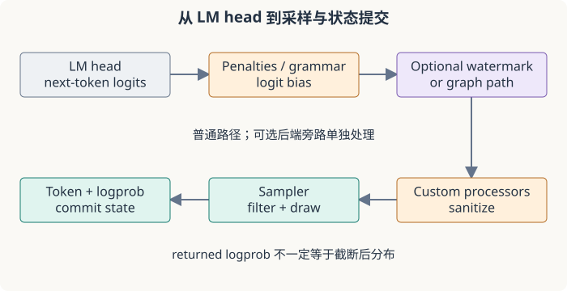
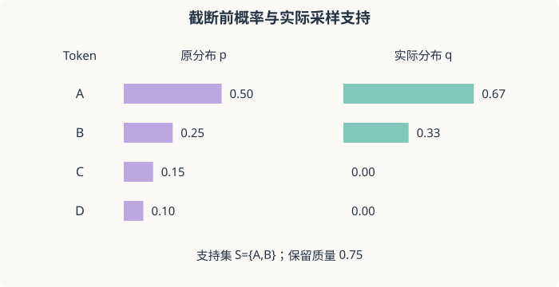

第 46 章 · SGLang 服务生命周期
Logits Processor & Sampler：概率分布、截断与 Logprob 语义
从 LM head 的 logits 到实际 token，采样分布与返回的 logprob 为什么可能不同？
从 LM head 的 logits 到实际 token，采样分布与返回的 logprob 为什么可能不同？ 从具体反例出发，连接算法、工程接口和验收边界。
1. LM head 与 sampler 分工
Transformer 输出 hidden state h；LM head 将其投影为 vocabulary logits z。Prefill 普通生成只需要每条请求最后一个位置的 next-token logits；input logprobs 等任务另需相应位置。TP vocab shard 的 gather/argmax 优化属于 LogitsProcessor 与 backend 路径，采样是后续选择 token 的操作。
2. 源码中的 logits adjustment 顺序
当前 SamplingPipeline.sample 先应用 step penalties，再 grammar mask、logit_bias；可选 watermark 改变 logits 或直接提供 token；一般路径再应用 custom logit processors、非有限值 sanitization，调用 sampler。最后 commit watermark 和 penalty state。Graph 已采样等路径可绕过部分阶段。不要把该顺序写成所有历史版本通用，也不要把多个 mask 当作可以任意交换。

3. Temperature 与稳定 softmax
对 T>0，令 m=max_i z_i/T，p_i=exp(z_i/T−m)/sum_j exp(z_j/T−m)。减最大值不改变归一化概率。T 越小分布越尖锐；T=0 使用 greedy 路径的语义，而不是除零。若 grammar 把某个 token 屏蔽，通常以负无穷表示。所有候选被屏蔽是错误情形，不能偷偷恢复任意 token。
4. Top-K、Top-P、Min-P 如何改变支持集
以已归一化概率 [0.50,0.25,0.15,0.10] 为例，K=3 排除 D；P=0.70 按降序保留 A、B（累积0.75）；Min-P=0.4 阈值为0.4×0.50=0.20，也排除 C。固定 torch fallback 先求原排序概率的 cumulative sum，再施加 top-k mask、检查前序 mass 严格大于 top-p、最后 min-p；精确等号和 tie 顺序依实现处理。不同 backend 的联合筛选语义需分别核查。

5. 真实采样概率与返回 logprob
剩余集合 S 的归一化概率 q_i=p_i/sum_{j∈S}p_j。因此 B 的采样概率是1/3，但截断前是0.25；log q_B≈−1.099，log p_B≈−1.386。Sampler.forward 可返回温度调整前或调整后的 logprob，watermark 路径也可保存其他 logits；不要假定 API logprob 就是 q。RL importance ratio 必须核对 behavior support 与 logprob 来源（第35章）。
6. Seed、batch metadata 与确定性
SamplingBatchInfo 为每条请求保留参数和 seed；seeded sampling 使用 position 来区分每步随机数，torch fallback 在 seeded 路径保留完整排序以避免 batch-wide top-k 改变 tie 顺序。固定 seed 不足以保证浮点 reduction、kernel/backend 和 batch composition 全部确定（参第28章）。
7. 调试与生产测量
先固定 logits、grammar、seed、温度和 backend，检查 retained support、归一化总和、实际频率、返回 logprob 的来源及精确边界。观察 vocab gather、sort/filter、sampling mask capture 成本；不要用 CPU 教学排序证明 GPU 吞吐。对自定义处理器限制信任边界，不把任意请求提供的可执行扩展公开给不可信用户。
8. 交互：选择机制状态与反例
Sampling Runtime 教学实验
原始分布：A/B/C/D = 0.50/0.25/0.15/0.10，总和 1。
截断：K=3、P=0.70、min-p=0.4，仅 A/B 保留，剩余质量0.75。
重归一化：A=2/3、B=1/3；B 的实际采样概率不再是原来的0.25。
教学模型仅验证机制与反例，不代表真实 GPU 或集群 benchmark。
9. CPU 最小实验
下载 sampling_distribution.py，使用标准库运行。源文件包含确定性输出及正反例断言。
python3 examples/sampling_distribution.py实验是教学抽象，不执行实际模型、网络传输、GPU kernels 或 Kubernetes 部署。
10. 源码阅读路线与证据
固定上游快照 b323e8e6e3aacfe606b11a2ef51ae73bc8b283a7，区分当前实现、工程建议和教学推导。
- LogitsProcessor.forward：LogitsProcessor handles hidden-state selection and LM head output for forward batches.
- SamplingPipeline.sample / adjustment helpers：The pinned pipeline applies penalties, grammar mask and bias, optional watermark, custom processors and sanitization, then samples and commits state.
- Sampler.forward：Greedy and stochastic paths differ; return-original-logprob and RL options change logprob computation.
- top_k_top_p_min_p_filter_sorted_probs_torch：The torch fallback filters sorted probabilities using cumulative mass, top-k and min-p relative to the maximum.
- SamplingBatchInfo：Per-request sampler parameters, plugin state and seeds are organized into batch metadata.